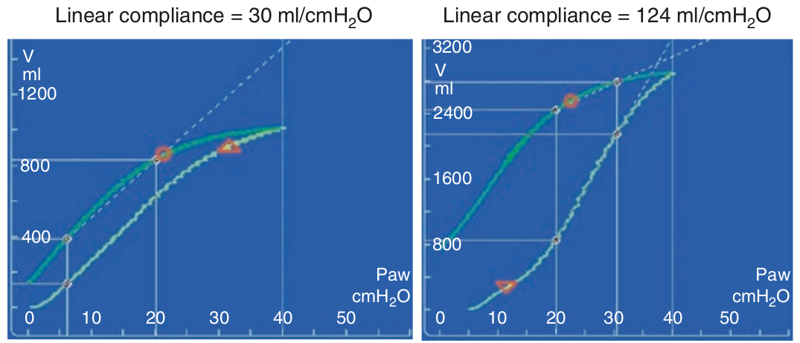

کمپلیانس خطی و یا کمپلیانس دامنه میانی، کمپلیانس ناحیه ای از ریه است که در هنگام انبساط بازگشائی پیدا میکند. به عبارت دیگر قسمت بین دو تغییر در شیب را تشکیل میدهد. هر چه شیب عمودتر باشد بازگشائی بیشتری روی خواهد داد. بنابراین کمپلیانس خطی زیاد معادل استعداد زیاد برای بازگشائی است. کمپلیانس خطی متفاوت از کمپلیانس استاتیک است. به عنوان یک قانون کلی میتوان گفت که اگر کمپلیانس خطی دو برابر کمپلیانس استاتیک باشد استعداد زیادی برای بازگشائی وجود دارد.

در مورد کمپلیانس خطی کدام مورد زیر غلط است؟
۱ - کمپلیانس خطی در محدوده فشار صفر تا ۴۰ سانتی متر آب اندازه گیری میشود
۲ - کمپلیانس خطی نشان دهنده استعداد ریه ها برای بازگشائی است
۳ - در ریه های دارای استعداد برای بازگشائی، کمپلیانس خطی بیشتر از استاتیک است
۴ - در ریه های فاقد استعداد برای بازگشائی، کمپلیانس خطی برابر با استاتیک است
۵ - کمپلیانس خطی بین دو نقطه تغییر در شیب در شاخه صعودی لوپ اندازه گیری می شود